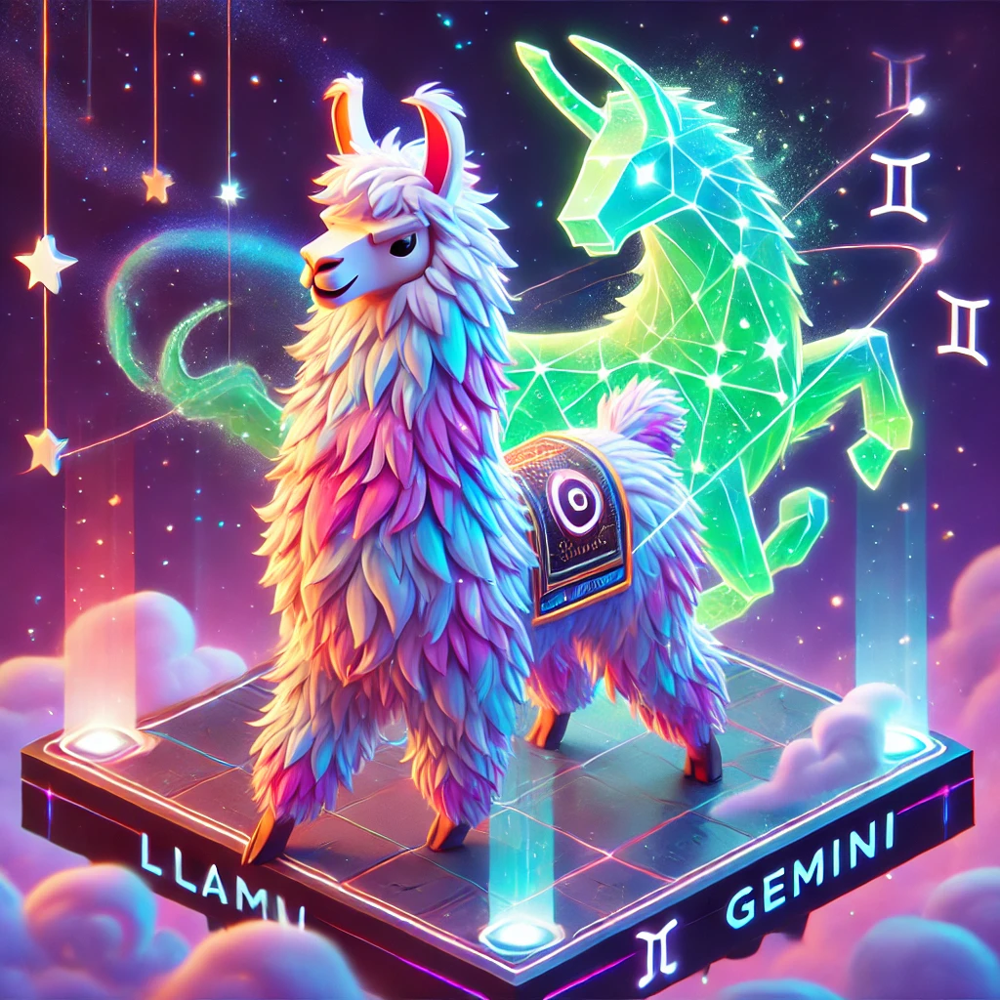
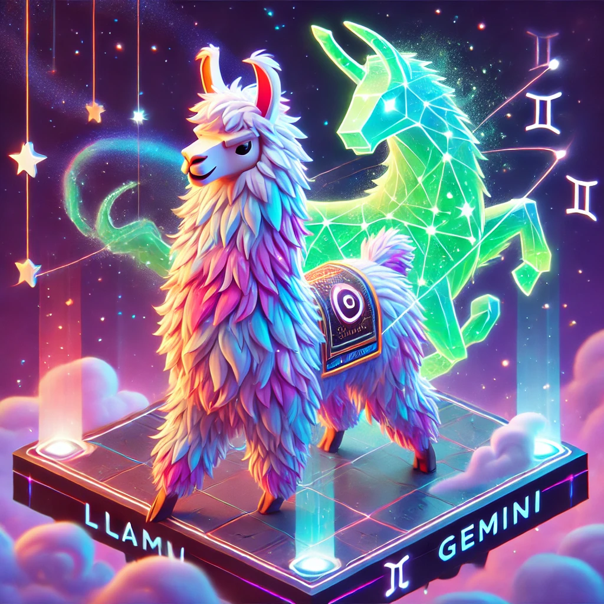

Avaliação do Desempenho de Modelos LLaMA e Gemini na Correção de Redações do ENEM
 


Aluno: Daniel Silva Lopes da Costa. NUSP: 11302720
Orientador: Msc. Igor Cataneo Silveira
Orientador: Prof. Dr. Denis Deratani Mauá
Resumo
Este trabalho avalia o desempenho dos modelos de linguagem LLaMA e Gemini na tarefa de correção automática de redações do ENEM, focando na atribuição de notas para as cinco competências exigidas. A análise foi estruturada em duas fases principais: a exploração de diferentes padrões de prompts e a utilização dos modelos como insumos para algoritmos supervisionados de aprendizado de máquina.
Os resultados indicaram que ajustes no formato dos prompts, especialmente os padrões contextualizados e em cadeias de pensamento, podem melhorar significativamente a precisão e a consistência das respostas geradas pelos modelos. Além disso, as saídas desses modelos, combinadas com métricas derivadas por ferramentas como o NILC-Metrix, mostraram-se relevantes para a construção de modelos supervisionados mais robustos.
O trabalho também introduz um dataset estendido, com a inclusão de redações nota mil, para mitigar desequilíbrios nas distribuições de notas e enriquecer a base de dados disponível para a pesquisa. Apesar dos avanços, desafios como a escassez de redações com notas muito baixas e a necessidade de maior transparência nos modelos utilizados permanecem.
Contribuindo para o desenvolvimento de ferramentas mais eficientes e acessíveis, este estudo reforça o potencial dos grandes modelos de linguagem na transformação da avaliação educacional, apontando caminhos para pesquisas futuras em técnicas de aprendizado por reforço, engenharia de prompts e uso de dados multimodais.